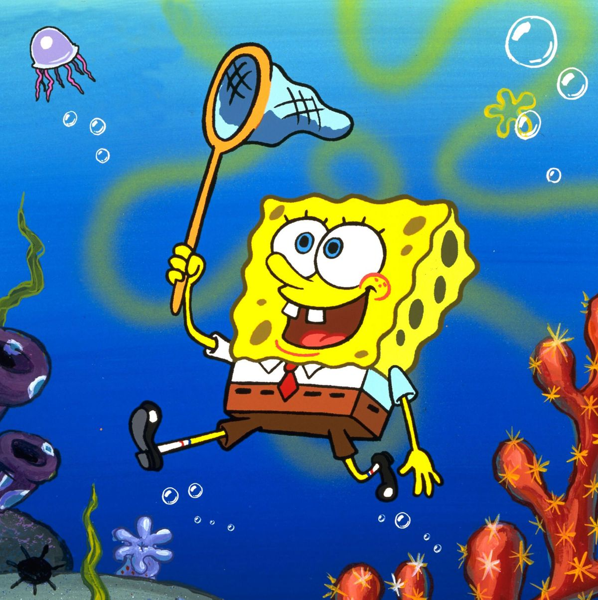

SpongeBob SquarePants

View My GitHub Profile
This is my second web page!
My first web-site was about Sponge-Bob
Here are some true facts about Sponge-Bob:
He is squared, by only one mean.
He is the most simple animal form.
That’s it. You can find more facts in his
wiki page